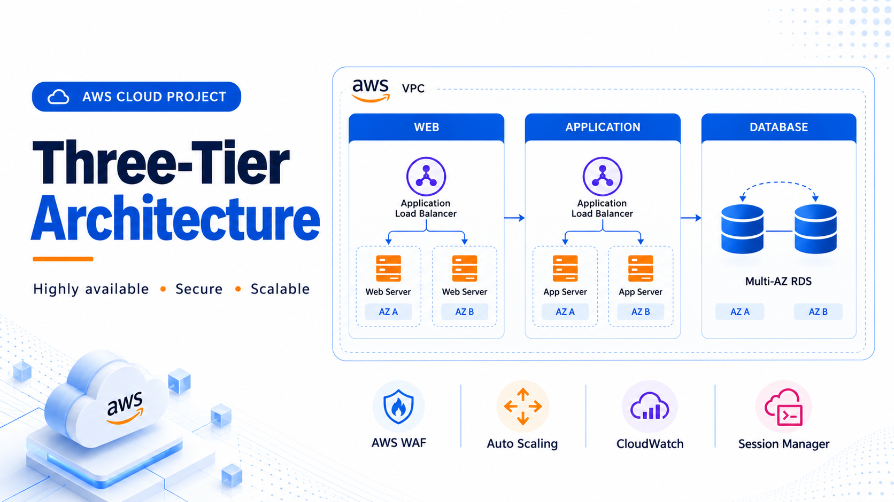

Three-Tier Architecture on AWS
AWSDesigned a high-availability 3-tier AWS architecture across two Availability Zones using public and private subnets. Configured Application Load Balancers, Auto Scaling Groups and Multi-AZ RDS MySQL for scalability and failover. Implemented AWS WAF, Security Groups, IAM, VPC Flow Logs and CloudTrail.
ALBASGRDS MySQLWAFIAMCloudTrail